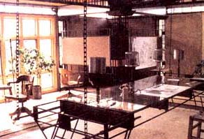

The Right Stuff
The global construction industry uses 3 billion tons, or 40% of the raw materials taken from the planet every year. There is a growing movement in the recycled building material industry, however, that promises less expensive, less wasteful and less toxic homes.
By Sam Martin
June/July 2000
"The world we have created today as a result of our thinking thus far has problems that cannot be solved by thinking the way we thought when we created them." - Albert Einstein
It's a sensible question, really; we're already capable of producing biodegradable polymers and cornstarch-based plastics. Is it such a stretch to think we can make houses that biodegrade?
The incentive is certainly there: Building is one of the largest contributors of nondecomposable and toxic waste in the world. According to David Malin and Nicholas Lenssen, authors of Worldwatch Paper 124 (Worldwatch Institute, 1995), the global building industry uses 3 billion tons, or 40%, of the raw materials taken from the planet every year. Moreover, the industry expropriates 40% of the world's energy for construction and building operations. Here in the United States, building accounts for 20% of the 221.7 million tons of trash we toss out daily; that's 44.34 million tons of trash coming from our building sites each day. Imagine how much cleaner our water and land would be if we built with materials that not only turned back into soil when we finished with them, but also added nutritional value to that soil when they decomposed.
"We must make buildings like trees," an inspired McDonough says. "Our buildings must give back more than they use."
Simply take a look at The Gap Inc. office complex in San Bruno, California, where the roof harbors native grasses and wildflowers, or the new environmental studies building at Ohio's Oberlin College, which produces more energy than it consumes, and you will understand McDonough's vision. These "fecund structures," as he calls them, purify water, produce oxygen and sequester carbon dioxide ...just like trees.
And while our concerns as potential homebuilders are different from those of large businesses - to start with, we're working on a much tighter budget - we can learn born the ideal these buildings embody. In a word, we can build sustainably. We can use fewer materials. We can reuse old materials. We can recycle the materials we use and stop Us ing materials that have been treated with toxic or chemical compounds. We can buy locally. We can be more energy efficient. In other words, we can "build green."
Odd as it may have been to see an architect at a conference on recycling, I came away understanding the unifying foundation underlying any "green" structure, whether it be a straw bale home in New Mexico, a rammed earth garage in Oregon or a 50-story office building in New York. Instead of isolating recycling, building and sustainable living into separate compartments, green building brings together all three - and much more - in one cozy room. It's a concept McDonough calls responsible living. "When did we stop living like people with lives and start living like consumers with lifestyles?" he asks incredulously. "It's time we start realizing our interdependence and our responsibility to the planet. It's time we start living as if we're staying."
The Foundations
Green building got its start in the mid 1970s, right after the OPEC oil crisis in 1973 sent the price of gasoline skyrocketing in the United States. The U.S. government began rationing fuel across the country, prompting many Americans to realize that being dependent on a single energy source was not smart. That's when solar energy made its first big push and electric engines, started to be taken more seriously.
On the building front, architects be gan looking at ways to seal windows and doorframes and to investigate whether insulation could make heating and air conditioning more efficient. It did, but while they were closing up houses they forgot to leave out toxic materials.
We have only to look at the asbestos awakening of the late 70s and early '80s to understand the importance of leaving chemical compounds out of our homes.
Fortunately, architects would soon realize that they could both increase energy efficiency and promote healthy indoor air quality by building in ample ventilation, large amounts of natural sunlight and by choosing natural materials over chemical ly treated materials.
"In the 70s we tightened our houses up in order to save more and more energy," says Alexis Karolides, senior research associate at the Rocky Mountain Institute. "But we continued to put more toxic substances in. Carpets, vinyl wall and floor coverings, toxic types of insulation, formaldehyde in our millwork and cabinets - all these things in a tightly enclosed house. These days pretty much every product has a natural alternative, and we can balance out energy efficiency and indoor air quality."
It wasn't until 1985 that the term "green building" made its way into the lexicon, when the Environmental Defense Fund in New York City unveiled its new office building on Park Avenue. The renovated building boasted centralized atria for natural lighting, as well as nontoxic insulation and natural materials. The architect was a young man not long out of Yale Architecture School named William McDonough.
After 1985, green building concepts were adopted by more businesses as they began to realize that saving en ergy meant saving money, and that more sunlight and fresh air meant happier employees and therefore better-quality work.
In 1991 another seminal green renovation, that of the Audubon House in New York, was completed. A year later the American Institute of Architects published the first edition of The Environmental Resource Guide. By this time more people began to see that building green wasn't only about erecting earth-friendly walls; it was also about ensuring air quality, conserving energy, recycling and many other aspects of minimal-impact construction. The green building concept had grown to encompass a host of building possibilities, uniting them under one environmentally sound roof.
Then, in 1992 at the Earth Summit in Rio de Janeiro, green architecture for residential building joined the party. That's when the Austin Green Building Program, a city-funded group organized under the direction of architect Pliny Fisk and his Center for Maximum Building Potential in Austin, Texas, was recognized by the United Nations as "an exemplary initiative for the environment." No other group in the United States won an environmental award that year.
"It was the first time a city had set up an architectural program relating to sustainability," Fisk told me recently. "And I think it probably triggered the state and others - including the Department of Energy - to start funding projects like ours."
Because of Fisk's and Austin's success, residential green building programs have been launched in Portland, Denver, Seattle and many other fast-growing, environmentally conscious cities around the country. These programs allow builders to learn about "eco-options"-teaching not only sustainable practices like water harvesting, but also introducing builders to alternative materials and energy-saving ideas. Many programs will also send experts out to rate a home's earth-friendliness, using a point-based system: two points, say, for not using old-growth wood, 15 points for a water catchment system, etc. The ratings are meant to give environmental market value to homes that would otherwise go unrecognized for their innovative design and construction. After all, green houses don't have to be (and sometimes shouldn't be) earthships or geodesic domes. For all their ingenuity, green homes oftentimes look stubbornly normal (never mind the PV panels).
Making the Right Decisions
In the simplest terms, green build ing is building with one eye on the environment and one eye on The Big Picture. In other words, how are you and the decisions you make as a homebuilder going to affect the ecosystem on a local, regional and global level?
"Reducing your environmental impact is a very interesting combination of things," notes Fisk. "It's a very careful maneuvering back and forth until you actually are getting to the point where you're [using local resources] and you're not ruining your environment."
And so, when you set out to build green, it's important that you consider the many possibilities available. The first and perhaps most important step is choosing the right building materials. This will be crucial to energy efficiency and indoor air quality, as well as other concerns like adaptability and flexibility. A helpful mantra you can evoke when it comes time to make a decision is "Reduce, Reuse, Recycle" - the "3 Rs" of sustainability.
It's no coincidence that green building bears a close resemblance to minimalist architecture, with its no-frills finishing and simple, user-friendly structures. Fisk's place just outside of Austin, The Center for Maximum Building Potential, or Max's Pot as it's affectionately known, is a complex structure only to the extent that it embodies new ideas. Once inside, you see that there is no crown molding, no baseboards and no dropped ceiling. Every wall, joint and support is there because it serves an indispensable function within the whole structure, whether it be insulating, load bearing or lighting. The entire structure is simple and effective, with no money or materials wasted on superfluous and oftentimes toxic finishings.
Needless to say, the more materials you use - both in terms of type and amount - the more complicated the building process becomes. In order to ease the load - both on yourself and on the earth - you're going to have to be more efficient. Using less is a good way to start.
As our buildings have gotten more elaborate, observes Fisk, the environment has paid a corresponding price. It's time, he argues, for the homebuilder to "supersimplify."
"The developers aren't going to supersimplify," he admits. "But the homeowner, the owner-builder - that market might be able to get down to, say, four or five basic materials instead of hundreds of materials."
How flexible or adaptable your green home will be through the years is another consideration in the design stage. Families are, after all, dynamic groups. Children grow up and move away. Interests change. If you're going to build a home, it needs to be able to adapt along with the people living inside. Statistically speaking, the most damage to the environment occurs during home remodeling. Building with the future in mind not only keeps waste out of the landfill, but it allows for practical and esthetic changes as well.
In Austin, Fisk is working on several ways to accomplish flexibility in building. One plan that's been on the drawing board for years - but hasn't reached the market because Fisk "keeps discovering more and more things" - is what the architect calls "green form systems." Basically, a green form is an Erector Set for building, allowing the separate components of a structure to be disassembled and reused. Walls can be removed and fitted elsewhere, bathrooms can be relocated, tables can be folded up into walls or raised to ceilings to save space, and so forth. In fact, at Max's Pot, Fisk and his crew of eager interns and designers already use a kitchen on wheels. The solar oven, the rainwater-fed sink and the propane refrigerator can be moved from room to room or even outside into the central courtyard, depending on spatial needs.
"Most structures change," explains Fisk. "But what is happening at the moment is that we say we're building for 50 to 100 years, when in fact we're doing nothing to try and enable buildings to adapt for future unpredictable events. If I go to England, I can get a joint system that has no drilling, no riveting, no welding, nothing at the joint except a bolt squeeze system that squeezes the flanges together and holds at the flange point. I can dismantle the entire building and reuse it in whatever configuration. I'm talking about the change of materials, the cutting out of walls, the waste that's going to the dump, the repair, the maintenance. All those things can be more expensive than the cost of your original building."
According to Fisk, Europeans have been looking to their past to come up with flexible systems. The Swedes are reviving the ancient Swedish Bole building technique, a post-and-beam-like construction that uses no nails or other fasteners. Says Fisk: "You could disassemble the whole thing and put it in your carriage and take it 100 miles down the road and assemble it again." Likewise, Japanese builders are working on wooden framing systems that fit together like bedframes. There's also the "open floor system," which allows you to put your plumbing anywhere, take it out and relocate it.
Life Cycle Analysis
Every material that goes into your green house will have an ecological footprint. If you're building in Michigan with timber from Oregon, how was that wood transported? Is there a local alternative? What's going to happen to it when you're finished using it in 75 years? Architects call - this kind of assessment a life cycle analysis, or LCA.
According to Warren Karlenzig, author of A Blueprint for Greening AffordableHousing, an LCA inventory will "assess any material from the point of extraction (say, from a forest or mine), through manufacture, distribution use and disposal." Essentially, LCA determines four basic qualities about each material you use:
* Where and how is the material harvested?
* How was it manufactured or produced
* How will it be used in the building process?
* What will happen to it once it's finished being used?
Unfortunately, experts can't agree on a unified method for conducting a LCA. Many say it is too expensive or too time-consuming; plus, the variables in the life cycle of any given material are vast. Nonetheless, the agreed-upon principles behind LCA - which demand that materials be tracked from cradle to grave, so to speak - can serve as a guide to even the small-scale homebuilder.
"Life Cycle Analysis is really a protocol for how to study materials," says Nadav Malin, editor of Environmental BuildingNews. "But it's not feasible for an architect or a builder to sit down and start doing a detailed study before deciding what to use when they're building. Ideally what should be available are [materials data and analyses] that architects or builders can refer to. That's a large part of what we try to do with Environmental Building News (EBN). That was also the premise behind the Environmental Resource Guide that the American Institute of Architects (AIA) published for a number of years."
LCA checklists are available from several organizations (see Resources). In addition to EBN and the AIA, the Environmental Protection Agency and the American Society for Testing and Materials are perfecting more comprehensive LCA tests.
Green Atternatives
When you hear the term green building, the first thing that pops into your head probably isn't life cycle analysis. More than likely you think of straw bale, rammed earth or some other sustainable building technique that has infiltrated the mainstream homebuilding market - thanks largely to affordability and accessibility. Building with straw, for instance, is easy to learn; it's also cheap, locally available, recyclable and energy-efficient.
But straw bale is used mostly for exterior walls. What about the interior walls, the roof, the slab foundation, the frame, the furnishings and the cabinetry? Thankfully, there are now green alternatives available for almost every standard building material, from concrete to wood to rubber to finishes. Not all of these options will be available at your local Home Depot, but a little extra research on your part will uncover a very active community of small businesses dedicated to green building products. (See Resources for journals, books and Web sites dedicated to green building).
So where do you start? Instead of standard cement concrete, choose a concrete made with fly ash (fly ash can replace 15% to 30% of the cement used in concrete mix). By choosing a concrete that makes use of this byproduct of coal-fired electric plants, you can reduce waste and pollution while limiting your demand for cement - the manufacture of which is a chief source of greenhouse gases. (Fisk predicts that the production of Portland cement will be responsible for 17.5% of worldwide greenhouse gases by 2015.)
Another alternative is to use less concrete. Instead of pouring concrete slab foundations, use pier foundations or precast concrete form systems that include insulation. Greenblock, a company out of Colorado, uses wall forms made from expanded polystyrene, helping to keep Styrofoam out of landfills.
Avoid plastics, plastic coatings and plastic foams that contain chlorofluorocarbons (CFCs) or hydrochlorofluorocarbons (HCFCs). Recycled plastic lumber, on the other hand, can help to keep toxic plastics out of our municipal dumps. Other good recycled options include foam insulation, Thermoply™ exterior sheathing and floor tile made from ground glass.
It's worth mentioning here that some woods, if carefully selected, can be perfectly acceptable building materials. Wood is renewable, reusable and natural. However, you begin running into problems when you start using old-growth or tropical timber, both quickly becoming endangered on a global scale. According to James Lovelock, author of Healing Gaia: Practical Medicine for the Planet, we have lost nearly 65% of the world's tropical forests to deforestation, and there are so few primal forests left in this country that to cut them verges on sacrilege. If you do opt to use wood, be sure that it has been certified and labeled by private sustainable forestry groups like the Forest Stewardship Council (FSC). Approved wood is generally cut from trees that are small in circumference and no more than 75 years old, but with more efficient milling standards, we're getting more lumber out of less tree these days.
You might also want to consider using engineered wood products in addition to certain types of natural wood. Sheet materials like hardboard, wallboard and fiberboard (100% recycled only) are often good choices, as they are made from waste woods, newspaper, gypsum and straw. Glued and laminated timbers are also acceptable, since they carry the same rigid shape and strength as old-growth timbers but are made out of waste wood. Be careful, however, to avoid boards and timbers glued with formaldehyde-based adhesives; they will continue to release formaldehyde after they're cured, compromising your indoor air quality.
But is It Too Expensive?
Until more people start using recycled products, those products will often - but not always - cost a little more than conventional building materials. That doesn't mean, however, that building green is necessarily more expensive than the more conventional alternatives.
"It's not too expensive if you address green building from the very beginning," says the Rocky Mountain Institute's Karolides. "That means instead of using a piecemeal, add-on approach, where every line item construction material is considered separately, you consider the whole building. When you install better windows or put better insulation in your walls and roof, you can downsize your furnace. Again, you're spending more money - maybe 15% or 20% more on the windows and the insulation - but you save money on your furnace. And, of course, you save money on the operations [electricity, fuel, etc.] of the house."
Your initial costs may be higher, but with improved energy efficiency and greater durability, you may well save money in the long run. And, if you simplify the number of materials used and employ multiuse materials like Durisol™ wall systems - fireproof wood and concrete wall forms that combine the strength and insulation of cinder block construction with the flexibility of wood construction - you'll realize both short- and long-term savings.
So, just as you would consider the environmental impact of construction as it relates to the greater ecosystem, you have to take in the big picture when it comes to costs. Green building is as much about economy as it is about ecology.
As you take a long look toward your future, your children's future and their children's future, consider this inspiring, early example of green building, borrowed from the 14th century. In 1386, when College Hall in Oxford, England, was being built, the architect made sure to plant oak trees to replace those he'd harvested for the ceiling beams. The beams, he imagined, would need replacing once the original ones started to rot. True to his imagination, the university replaced the beams with the very trees he had planted. What makes the story special is that College Hall was not remodeled until the 19th century - some 500 years after the first thought went into its design.
All this to say that building sustainably should be the goal of any builder, whether of a university or a two-bedroom house. After ll, it's up to us to strike a balance between our needs and the limits of our natural resources. To do this we have to build smart, and building smart is building green.
Read more Alternative & BU ILDING STORIES at www.motherearthnews.com
|
The Center for Maximum Building Potential in Austin Texas, encompasses every aspect of green building, from natural lighting to rain catchment to alternative materials like fly ash cinder block, straw bale and steel framing. |
The Austin Green Building Program, a city-funded group organized under the direction of architect Pliny Fisk (below with co-director Gail Vittori ) and his Center for Maximum Building Potential, was recognized by the United Nations in 1992 as ""an exemplary initiative for the environment."" Because of Fisk's and Austin's success, residential green building programs have been launched around the country to teach builders about ""ecooptions,"" like alternative materials and energy-saving ideas. |
 The inside of Max's Pot, as Fisk's center is affectionately known, is a green builder's reference library. Either through testing or building, the center puts to use a variety of earthen and other indigenous materials, including adobe, rammed earth, caliche, laterite, fly ash and natural pozzolan cements, rice husk ash cement and alumina clay brick. To present flexible spacial solutions, Fisk uses computer-enhanced images. A one-room private bathroom now becomes a multifunctioning area. The built-in and drawn curtains can section the room off into a dressing area, a bathroom and a laundry room if need be. To solve heating problems, Fisk has also invented a ""kitchen on wheels."" The solar oven, the rainwater-fed sink and the propane refrigerator can be moved from room to room or even outside during the lengthy Texas summer. |
|
How flexible your green home will be through the years is another consideration of the design stage. Max's Pot is Erector Set-like in its daptability, with each separate component easily disassembled and reused. Walls can be removed and fitted elsewhere, while tables can be temporarily raised to ceilings, with the use of cranks and chains, to conserve space. |
This soon-to-be thatched roof barn in Seguin,Texas, has walls made with 90% recycled Styrofoam. |
Not all green buildings are geodesic domes and earthships. This residential home in Austin, Texas, was built by Casa Verde Builders, a group that constructs energy-efficient and ecologically sound structures. |
|
This house just outside of Austin is built with rammed earth walls downstairs and compressed soil block upstairs. At right, workers create walls by pumping earth into wooden forms. |
|
|
|
|
 |
|
|
|
|
|